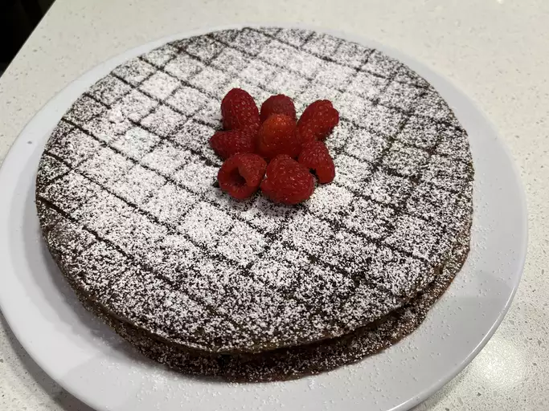

Korean BBQ Galbi

Ingredients
- 6 ounces dark chocolate (70% cacao), chopped into small pieces
- 10 tablespoons unsalted butter, at room temperature
- 1 cup ground almond meal (also know as almond flour)
- 2 tablespoons unsweetened cocoa powder
- 1 tablespoon coffee liqueur
- ½ teaspoon kosher salt
- tiny pinch cayenne pepper (Optional)
- 4 large eggs, at room temperature
- ¾ cup white granulated sugar
Directions
- Preheat the oven to 350 degrees F (175 degrees C). Generously grease
an 8-inch cake pan with butter, and place a round piece of parchment
paper in the bottom. Dust the inside and sides with flour and knock out
access. Set aside.
- Place chocolate and butter in a mixing bowl, and place on top of a
saucepan filled with 1 inch of water. Place on low heat until the butter
and chocolate have melted.
- Remove from heat, and stir together with a spatula. Stir in almond
meal, cocoa powder, coffee liqueur, salt, and cayenne until fully
combined. Set aside.
- Combine eggs and sugar in a second bowl, and beat with an electric
mixer, or whisk by hand until very thick and pale colored.
- Pour chocolate mixture into the egg mixture; fold in gently with a
spatula until just combined. Transfer batter into the prepared pan.
Tap pan on the counter to settle the mixture.
- Bake in the preheated oven until a wooden skewer inserted near the
center comes out almost clean, 25 to 30 minutes.
- Let cool for 30 minutes in the pan before turning out onto a plate.
Let cool to room temperature, before wrapping and transferring into the
fridge to chill before serving.
- Before cutting, the top can be dusted with cocoa and/or powdered
sugar if desired. Serve with unsweetened whipped cream and fresh
raspberries.
Return to main page